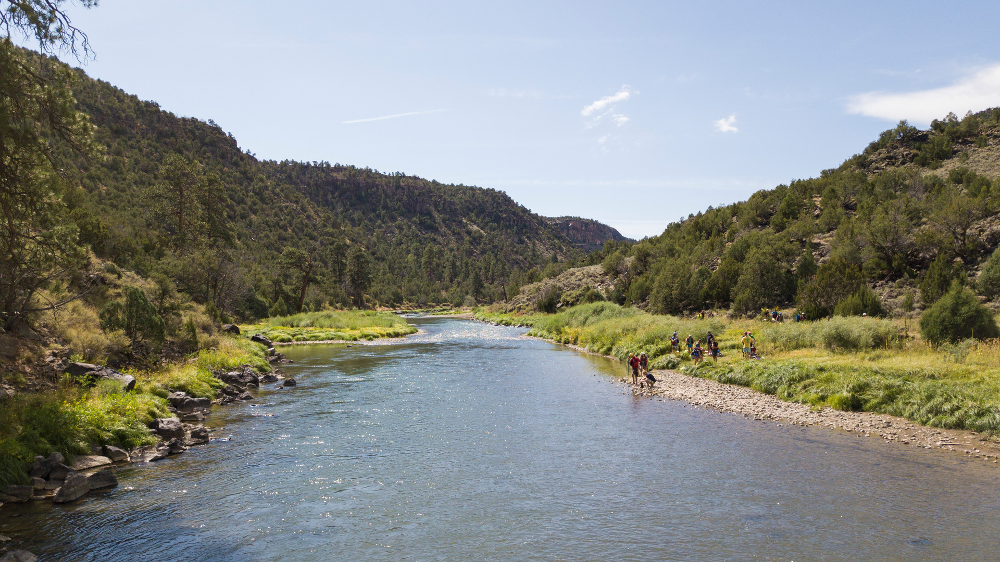

The University of New Mexico (UNM) which is the state’s only Carnegie-designated R1 research institution and one of 14 R1 Hispanic Serving Institutions (HSI) in the country, is proud to offer a brand-new graduate-level research experience through the Museum Research Traineeship (MRT). In a state rich with history and tradition, the MRT is dedicated to increasing diversity in STEM and encouraging collaboration across disciplines in order to better understand our past as well as our future.
The University of New Mexico (UNM) which is the state’s only Carnegie-designated R1 research institution and one of 14 R1 Hispanic Serving Institutions (HSI) in the country, is proud to offer a brand-new graduate-level research experience through the Museum Research Traineeship (MRT). In a state rich with history and tradition, the MRT is dedicated to increasing diversity in STEM and encouraging collaboration across disciplines in order to better understand our past as well as our future.
A collaborative effort among the Museum of Southwestern Biology, the Maxwell Museum of Anthropology, and the Paleobiology Collection in Earth and Planetary Sciences at UNM, the MRT is an interdisciplinary training program that utilizes our institution’s world-class museum collections to better understand critical contemporary issues, including past and future changes to the global environment and their impacts on human communities and biological and earth system resources.
Throughout their graduate programs, MS and PhD students will be exposed to cutting-edge imaging and material science technology to develop new ways to interpret museum objects, such as biological specimens, pottery sherds, fossils, geological samples, and associated data. By breaking traditional disciplinary boundaries within museum science, students will not only have an opportunity to expand our current understanding of these histories but to also translate their findings in a way that will ultimately impact future research, education, and policy.

The Rio Grande Research Collaborative is dedicated to exploring the social-ecological research questions associated with the Rio Grande Water Fund and its approach, along with other ongoing activities in the watershed. This is a unique opportunity for the University of New Mexico to develop an ongoing, transdisciplinary research collaborative involving UNM faculty, students at all levels of education, as well as community members and stakeholders in the watershed.
Whether you're an expert in water sustainability, or interested in the topic itself, we invite you to join us for a special webinar series this fall that will begin exploring the specific issues involved in the Rio Grande watershed and transdisciplinarity.
 Undergraduate students from any and all majors are eligible for this unique interdisciplinary opportunity to gain hands-on experience in water resource systems and models, culminating in the research and development of a dynamic simulation model of the Middle Rio Grande. Any undergraduate student who has an interest in water sustainability and/or research, is encouraged to consider applying.
Undergraduate students from any and all majors are eligible for this unique interdisciplinary opportunity to gain hands-on experience in water resource systems and models, culminating in the research and development of a dynamic simulation model of the Middle Rio Grande. Any undergraduate student who has an interest in water sustainability and/or research, is encouraged to consider applying.
This fellowship is made possible by the Dr. Roger and Teri Jones Interdisciplinary Science Fund. An alumnus of the School of Engineering, Dr. Jones's passion for water sustainability combined with his curiosity for simulations models inspired this unique undergraduate experience. If you would like to join the Jones' in their pursuit to expose undergraduate students to research opportunities that will impact our communities,
please consider making a gift to their fund.
Our 2020-2021 fellowship cohort, which consisted of Sofia Jenkins-Nieto (BS candidate, Environmental Science, 2022), Atlin Johnson (BS candidate, Civil Engineering, 2022), and Yoko Kentilitisca (BS candidate, Population Health, 2021), were mentored by graduate student Sean O'Neill from the Water Resources program in developing a simulated game about the water resource issues in the Rio Grande. By combining their various disciplinary backgrounds with the knowledge they gained over the past year in their graduate-level courses,
they have created an interactive game that integrates the sectors of water management, public health, and environmental justice to create more urban green spaces in an era of rapid climate change. The simulation is designed specifically for the Albuquerque area with the overall intent of promoting green spaces by planting trees using stormwater discharge that is not being actively used.
Download the Game